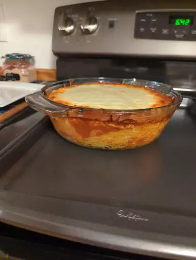

Baked Spaghetti recipe

Description
Comforting baked spaghetti recipe with plenty of melted cheese —
dish for potlucks, family gatherings, or a weeknight dinner.
Ingredients
- Noodles: Of course, you’ll need spaghetti noodles.
- Beef and onion: The meat sauce starts with a mixture of ground beef and diced onion.
- Sauce: A jar of meatless spaghetti sauce is the convenient secret ingredient. You can use homemade sauce if you want to go the extra mile.
- Salt: Seasoned salt enhances the overall flavor.
- Eggs: Eggs lend moisture and help hold the baked spaghetti together.
- Cheeses: You’ll need Parmesan, mozzarella, and cottage cheeses.
- Butter: Melted butter gives the dish extra richness.
Steps
- Boil and drain the spaghetti.
- Cook the beef and onion together, then drain off the excess oil.
- Add the sauce and salt. Whisk the eggs, Parmesan, and butter in a separate bowl.
- Toss the spaghetti in the Parmesan mixture.
- Layer the ingredients in a prepared baking dish according to the detailed recipe.
- Cover and bake for 40 minutes. Sprinkle with mozzarella, then keep baking until the cheese is melted.